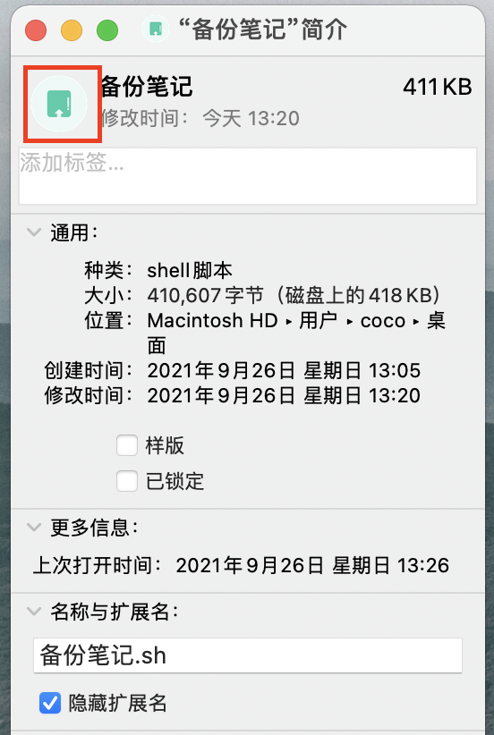

macOS修改应用图标
title: macOS修改应用图标 date: 2021-10-01 10:50:26 categories: 计算机 tags:
-
Mac
- 1.
首先需要拥有128*128分辨率的图标，推荐到iconfont下载(下载png格式)
- 2.
打开cloudconvert将png图片转换为icns格式
- 3.
在应用程序文件夹选中要修改的应用右键打开简介，然后将图片拖到如图所示位置

- 4.
其实不止应用程序，包括文件夹，sh脚本等都可以通过这个方式修改图标，但是一定要注意使用128*128分辨率，以及图片格式需要为icns，否则图标不会显示